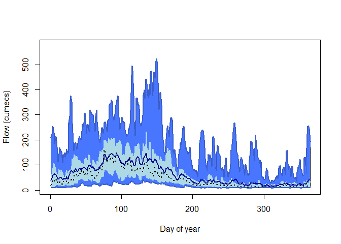
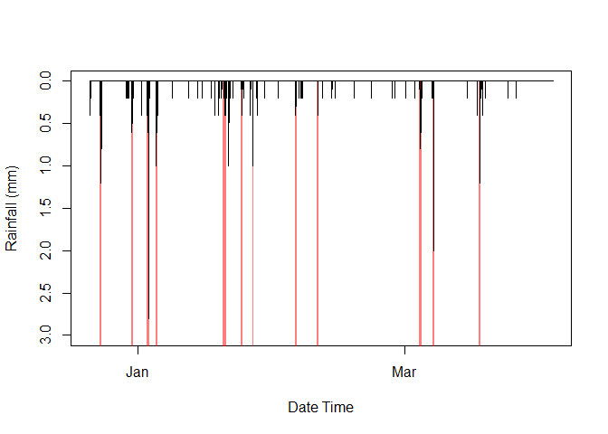

Introduction
This package is part of the fleet of flode tools designed for members of Evidence and Risk. This package, riskyData, is used to interact with the EAs Hydrology Data Explorer via the API. Hydrometric data can be pulled using in built functions. Data are stored in containers that implement strict quality controls. Data can be interrogated using a range of inbuilt tools.
Installation and loading
You can install the development version of riskyData from GitHub with:
# install.packages("devtools")
devtools::install_github("JonPayne88/riskyData")To load the package use;
Example 1 - Importing data
To find the data available for a gauge;
## WISKI ID 2002
loadAPI(ID = '2002')
#> measure period type
#> 1: flow 900 instantaneous
#> 2: flow 86400 min
#> 3: flow 86400 mean
#> 4: level 86400 max
#> 5: flow 86400 max
#> 6: level 900 instantaneous
#> 7: level 86400 minTo drill further into the data use;
loadAPI(ID = '2002',
measure = 'flow',
period = 900,
type = 'instantaneous',
datapoints = 'range',
from = '2012-10-01 00:00',-
to = '2013-10-01 00:00')#> ℹ Compiling parameters for raw download✔ Compiling parameters for raw download [621ms]
#> ℹ Downloading raw data✔ Downloading raw data [2.8s]
#> ℹ Collating metadata✔ Collating metadata [663ms]
#> ℹ Exporting data to HydroImport container✔ Exporting data to HydroImport container [396ms]
#>
#> ── Class: HydroImport ──────────────────────────────────────────────────────────
#>
#> ── Private: ──
#>
#> Data Type: Raw Import
#> Station name: Evesham
#> WISKI ID: 2002
#> Data Type: Flow
#> Modifications: NA
#> Start: 2012-10-01
#> End: 2013-09-30 23:45:00
#> Time Step: 900
#> Observations: 35040
#> Easting: 404007
#> Northing: 243741
#> Longitude: -1.94292
#> Latitude: 52.091994
#>
#> ── Public: ──
#> dateTime value quality
#> 1: 2012-10-01 00:00:00 10.50 Good
#> 2: 2012-10-01 00:15:00 10.40 Good
#> 3: 2012-10-01 00:30:00 10.40 Good
#> 4: 2012-10-01 00:45:00 10.40 Good
#> 5: 2012-10-01 01:00:00 10.40 Good
#> ---
#> 35036: 2013-09-30 22:45:00 4.64 Good
#> 35037: 2013-09-30 23:00:00 4.64 Good
#> 35038: 2013-09-30 23:15:00 4.64 Good
#> 35039: 2013-09-30 23:30:00 4.64 Good
#> 35040: 2013-09-30 23:45:00 4.64 Good
#> For more details use the $methods() function, the format should be as
#> `Object_name`$methods()Example 2 - compile daily flow statistics
## Import the Bewdley dataset
data(bewdley)
## Using a pipe calculate the hydrological year and then calculate statistics
bewdley$hydroYearDay()$dayStats(plot = TRUE)
#> ℹ Calculating hydrological year and day✔ Calculating hydrological year and day [12.9s]
#> dayYear Mean Median Min Max Perc5 Perc25 Perc75 Perc95
#> 1: 1 39.17188 19.30 9.68 210 10.4000 12.200 35.600 192.00
#> 2: 2 47.99227 25.80 9.64 225 10.2000 12.400 62.500 215.00
#> 3: 3 53.14900 34.55 9.26 255 9.9715 11.600 67.725 228.00
#> 4: 4 59.77555 40.65 9.39 252 9.9400 10.900 87.425 240.00
#> 5: 5 63.06871 34.70 9.76 228 10.2000 11.700 106.000 189.85
#> ---
#> 361: 361 33.29305 15.05 9.26 222 10.1000 10.975 35.925 163.85
#> 362: 362 36.36758 15.85 8.77 254 9.8800 11.300 28.500 245.00
#> 363: 363 38.64064 16.10 9.53 254 9.8115 11.000 26.100 250.00
#> 364: 364 42.81338 16.20 9.35 247 9.8445 12.175 38.125 214.85
#> 365: 365 40.54762 15.70 9.65 196 10.8000 12.500 31.550 172.00Example 3 - Use run length encoding to seperate rainfall events
## Import the Chesterton rain gauge data
data(chesterton)
## Calculate rain separation use RLE, minimum total event must be at least 2mm
rainSep(dateTime = chesterton$data$dateTime,
precip = chesterton$data$value,
threshold = 0,
minTotal = 2,
roll = 0)
#> id start end total
#> 1: 1 2011-01-07 08:30:00 2011-01-07 10:00:00 6.5
#> 2: 2 2011-01-11 02:15:00 2011-01-11 03:00:00 2.0
#> 3: 3 2011-01-13 20:30:00 2011-01-13 22:15:00 5.0
#> 4: 4 2011-02-19 06:45:00 2011-02-19 08:30:00 4.0
#> 5: 5 2011-02-26 00:30:00 2011-02-26 01:15:00 3.0
#> ---
#> 861: 861 2022-09-09 14:30:00 2022-09-09 14:45:00 8.4
#> 862: 862 2022-09-09 15:30:00 2022-09-09 16:15:00 6.0
#> 863: 863 2022-09-26 10:00:00 2022-09-26 10:15:00 3.6
#> 864: 864 2022-09-30 14:15:00 2022-09-30 17:00:00 5.8
#> 865: 865 2022-09-30 18:00:00 2022-09-30 19:30:00 3.8These can be integrated into plots;
## Plot the base data
plot(chesterton$data$dateTime[34000:44000], chesterton$data$value[34000:44000],
ylim = rev(range(chesterton$data$value[30000:40000], na.rm = TRUE)),
type = 'h', ylab = "Rainfall (mm)", xlab = "Date Time")
## Calculate the rain profiles using a 5hr aggregation
dayRain <- rainSep(dateTime = chesterton$data$dateTime[34000:44000],
precip = chesterton$data$value[34000:44000],
threshold = 0,
minTotal = 2,
roll = 20)
## Plot the identified windows
for (i in seq_along(dayRain$id)){
polygon(x = c(dayRain$start[i], dayRain$start[i], dayRain$end[i],
dayRain$end[i]),
y = c(0, 12, 12, 0),
col = scales::alpha('red', 0.5),
border = NA)
}
## Overlay the original rainfall for clarity
lines(chesterton$data$dateTime[34000:44000], chesterton$data$value[34000:44000])